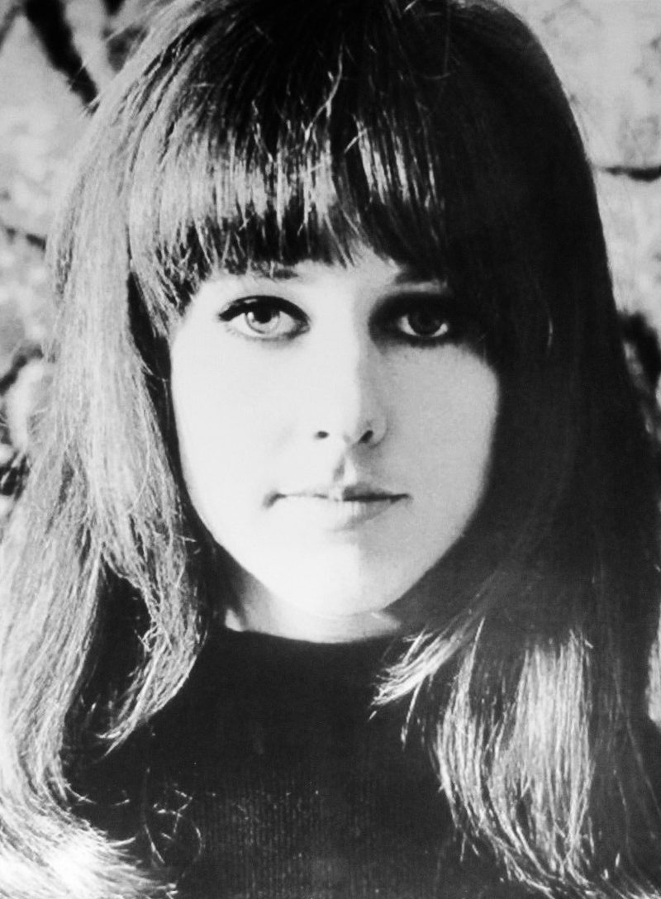

White Rabbit by Jefferson Airplane is the 1967 hit Grace Slick built from Lewis Carroll's Alice books.
The band recorded it in Hollywood on November 3, 1966.
Released as a single that June, it climbed to No. 8 on the Billboard Hot 100.

Table of Contents
- How Grace Slick Wrote It
- From the Great Society to the Airplane
- Recording and Release
- What the Lyrics Mean
- Chart Run and Legacy
- FAQ
How Grace Slick Wrote It
A $50 Piano With Missing Keys
Slick wrote the song between December 1965 and January 1966.
She wrote the words first, then worked out the music on a red upright piano.
It cost her about $50, and eight or ten of its keys were missing.
"That was OK because I could hear in my head the notes that weren't there," she said.
Miles Davis and Ravel
The march-like beat came from Miles Davis's 1960 album Sketches of Spain.
Slick singled out his version of the Concierto de Aranjuez.
Her other model was Ravel's Boléro, which also builds from a whisper to a peak.
From the Great Society to the Airplane
Slick first sang the song with the Great Society, a San Francisco band she started with her husband, Jerry Slick.
A live take from the Matrix club, released in 1968, runs past six minutes, with a long Indian-style opening.
In October 1966 Slick replaced Signe Toly Anderson as the female singer in Jefferson Airplane.
She brought two songs with her: White Rabbit and her brother-in-law Darby Slick's Somebody to Love.
She later said the sound of Jack Casady's bass was what won her over.
Recording White Rabbit by Jefferson Airplane
Hollywood, November 1966
The band cut the track on November 3, 1966, at RCA Victor's studio in Hollywood.
Rick Jarrard produced, and Somebody to Love was recorded the same day.
The lineup on the record:
- Grace Slick, vocals
- Jorma Kaukonen, lead guitar
- Paul Kantner, rhythm guitar
- Jack Casady, bass
- Spencer Dryden, drums
Two and a Half Minutes
Slick does not start singing until about 28 seconds in, and there is no solo or break after that.
Surrealistic Pillow came out on February 1, 1967, with the song on it.
RCA Victor issued the single in June 1967, backed with Plastic Fantastic Lover.
What the Lyrics Mean
The words borrow from Alice's Adventures in Wonderland and Through the Looking-Glass.
Pills change Alice's size, and a hookah-smoking caterpillar, the White Knight, the Red Queen and the Dormouse all appear.
In the book, Alice never takes a pill; she drinks from a bottle and eats a cake instead.
Slick said the song was a jab at parents who read their children these stories and then asked why the children used drugs.
She said "feed your head" meant reading as much as psychedelics.
Because the drug imagery hid inside a children's story, it slipped past radio censors in 1967.
Chart Run and Legacy
| Chart | Peak |
|---|---|
| Billboard Hot 100 | No. 8 |
| Cash Box Top 100 | No. 6 |
| Canada RPM | No. 1 |
Honors
- 1998: inducted into the Grammy Hall of Fame
- Named one of the Rock and Roll Hall of Fame's 500 Songs that Shaped Rock and Roll
- Rolling Stone's 500 Greatest Songs of All Time: No. 478 in 2004 and No. 455 in 2021
- Certified double platinum by the RIAA in 2022
Where It Fits
It belongs to 1967, the year of the Summer of Love.
It is on our list of the best 60s songs, and it sits at the heart of our 1960s psychedelic rock guide.
FAQ
What is White Rabbit about?
It uses images from Lewis Carroll's Alice books to talk about curiosity and drugs.
Slick said it was aimed at parents who read their children those stories and then wondered why the children took drugs.
She said the closing line about feeding your head means both reading and psychedelics.
Who wrote White Rabbit?
Grace Slick wrote both the words and the music, from late 1965 into early 1966.
She first sang it with her earlier band, the Great Society.
When was White Rabbit released?
It first appeared on the album Surrealistic Pillow on February 1, 1967.
RCA Victor issued it as a single in June 1967, with Plastic Fantastic Lover on the B-side.
What movies and TV shows use White Rabbit?
It plays in Platoon, The Game, the 1998 film of Fear and Loathing in Las Vegas and The Matrix Resurrections.
On TV it appears in the first episode of Stranger Things and in The Sopranos.
How high did White Rabbit chart?
It reached No. 8 on the Billboard Hot 100 and No. 6 on Cash Box in 1967.
It was the band's second Top 10 hit after Somebody to Love.
A cheap piano, a children's book and a Spanish march added up to one of the strangest Top 10 hits of the decade.
Wikipedia's entry on the song lists more of its covers and screen uses.
For more of the decade's music, head back to the 1960smusic.net homepage, then press play on White Rabbit by Jefferson Airplane one more time.